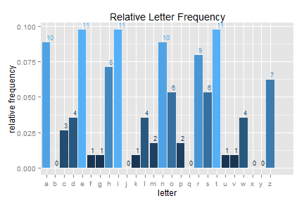

Ever read something and wondered what the distribution of (English) characters looks like?
Whether that wall of text contains 153 a's, or 154?
Whether your friend's phone texts are dangerously low on vowels?
What the most common English letters are?
D Bolotov
Ever read something and wondered what the distribution of (English) characters looks like?
Whether that wall of text contains 153 a's, or 154?
Whether your friend's phone texts are dangerously low on vowels?
What the most common English letters are?
Wonder no more.
LetterFreq!, a handy little tool built in Rstudio and Shiny, will take care of your letter-counting needs.
The app eats any text, dirty or clean, and shows you relative and absolute frequencies of the English letters contained therein.
Optionally, it will also plot the letter distribution from some English literature classics, or the main entries in the Oxford English dictionary, for comparison.
Let's see a demo of the histogram capabilities.
Define a test string and get frequency counts for it:
str <- "I am a string with numeric (123) and other non-alpha (%$^#&!) characters.
I live in this presentation and wonder what the rest of the world is like."
sanitize(str) #clean the string and get absolute frequency counts
## a c d e f g h i k l m n o p r s t u v w
## 10 3 4 11 1 1 8 11 1 4 2 10 6 2 9 6 11 1 1 4
This could use a few z's.
str <- "I am a string with numeric (123) and other non-alpha (%$^#&!)characters.
I live in this presentation and wonder what the rest of the world is like. ZzZZzzZ."
sanitize(str)
## a c d e f g h i k l m n o p r s t u v w z
## 10 3 4 11 1 1 8 11 1 4 2 10 6 2 9 6 11 1 1 4 7
Plot the distribution:
str <- "I am a string with numeric (123) and other non-alpha (%$^#&!)characters.
I live in this presentation and wonder what the rest of the world is like. ZzZZzzZ."
fplot(str)

Hmm. No j, but eleven i's? And not even one b? Fascinating.
Enter your own text, check other distributions, and see it in action here: letterFreq!